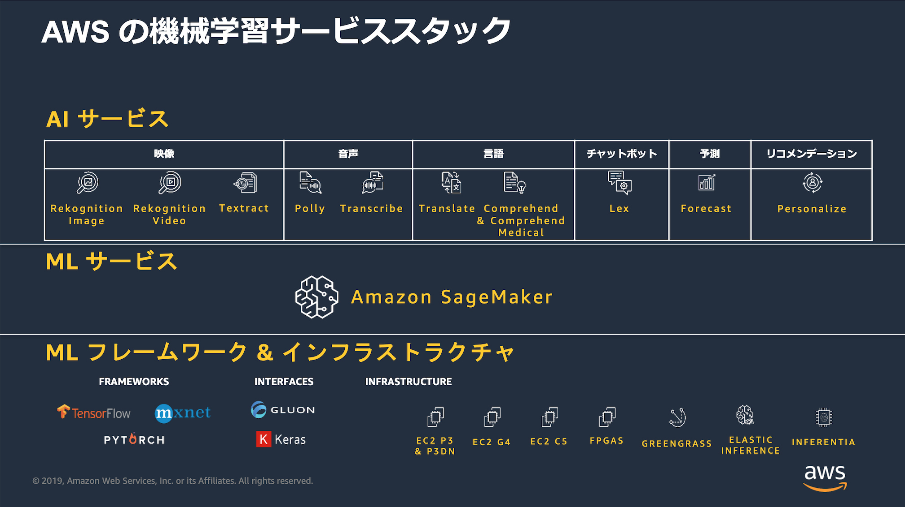

[第1回] AWS ではじめる機械学習¶
はじめに¶
昨今は、ビジネスの様々な場面にデジタル技術を取り入れて、ビジネスを変革していく「デジタル・トランスフォーメーション (DX)」の必要性が訴えられています。 デジタル技術には「機械学習」が含まれており、2000年代以降から現在も「第3次人工知能ブーム」の真っ只中にあると言われています。 特にここ数年は「人工知能 (AI)」や「機械学習」に関連する情報を毎日のように目にするようになり、ビジネスにおける機械学習の成功事例の報告も増えています。
その一方で、例えば下記のような悩みを持っている方が少なからず存在するのではないでしょうか？
機械学習を取り入れたいが、担い手がおらず導入に踏み切れない。
機械学習の知識はある程度あるが、実装手段までは分からない。
有償トレーニングの受講などノウハウ習得に費用をかけられない。
そこで、この記事ではこのような悩みを持つ読者が、パブリック・クラウドとしてシェアの高い AWS (Amazon Web Services) が提供するサービスを使って、ビジネスに機械学習を取り入れていく方法を考えていきます。
AWS では、「Amazon で培った機械学習に関するノウハウをすべての開発者に届ける」というコンセプトのもと、多数の 「機械学習サービス」 が提供されています。
独自の機械学習モデルを開発・学習・推論したい開発者・データサイエンティスト向けの「ML サービス」だけでなく、利用者に機械学習のスキルがなくてもデータを用意するだけで気軽に機械学習を実現できる「AI サービス」もあります。
機械学習に関する特別なノウハウが不要とはいいつつも、最大限活用していくためには各サービスの概要や使い方、ユースケースなどを理解することは必要です。 機械学習サービスの基本事項を整理した上で、読者が持つビジネス課題に取り組む方法を考えていきます。
(出典：「20190924 AWS Black Belt Online Seminar AWS AI Service」 P.11)
前提事項について¶
この記事における前提事項は下記です。
想定読者¶
ビジネスに機械学習を取り入れたいと考えているシステム開発担当者を対象とする。
機械学習に関する基礎的な知識を持っている。
AWS アカウントを持っており、AWS マネージメントコンソールを使って、Amazon S3 などの基本サービスを使ったことがある。
目指す状態¶
AWS の機械学習サービスの種類、それぞれのサービスの概要や使い方がわかる。
AWS の機械学習サービスや関連するサービスを組み合わせて、自身のビジネスに活用できる。
注意事項¶
この記事では、機械学習と AWS について、基礎的な知識があることを前提としています。 「機械学習とは？」「AWS とは？」といったそれぞれの基礎的な知識や AWS の基本的な使い方に関する解説は行いません。(当該の記事に関連する技術の解説は適宜行います)
機械学習に関する基礎的な知識は持っていない場合は、「【連載】教えてカナコさん! これならわかるAI入門」 を参照してください。 機械学習の基礎的な知識について非常にわかりやすく解説されています。
また、 AWS はオンラインで多数の学習リソースが提供されています。 例えば、下記のオンラインセミナーなどを必要に応じて参照してください。
今後の記事の投稿内容について¶
今後は下記の流れで記事を投稿していくことを検討しています。
AWS の機械学習サービスの全体像について
AI サービスに分類される10種類(※)の個々のサービスの概要と使い方について(※ 2019年11月現在のサービス数。上の図の分類で数えた場合)
ML サービスに分類される Amazon SageMaker の概要と使い方について
その他にも適宜下記の内容も織り交ぜていきます。
実際のビジネスシーンを想定した例題を設定して、複数の AWS のサービスを組み合わせたソリューションを考える。
AWS re:Invent 等のイベントで発表された新サービスや既存サービスの新機能の概要や使い方も紹介する。
次回は、まずは総論としてAWS の機械学習サービスの全体像についてまとめます。
著者紹介¶

菊地 貴彰 (KIKUCHI Takaaki)
株式会社 NTT データ システム技術本部 デジタル技術部 Agile プロフェッショナル担当
大学・大学院では、機械学習を専攻。 ベイズ的枠組みを用いて、複数の遺伝子のデータから遺伝子どうしの相互作用ネットワークの推定に関する研究を行った。
株式会社NTTデータに入社後は、法人や金融のシステム開発のシステム基盤担当としてキャリアを積み、 現在はデジタル技術や Agile 開発を専門に扱う組織でシステム開発全般を担当する。 2019, 2020 APN AWS Top Engineers, Japan APN Ambassador 2020 に選出。
本連載の内容に対するご意見・ご質問は twitter: @kikuchitk7 まで。